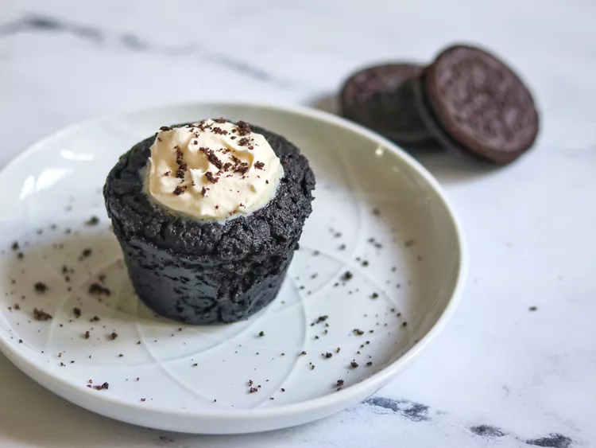

Oreo Mug Cake

What is Oreo Mug Cake?
This is a viral 3-ingredient Oreo dessert recipe.Takes less than 5 minutes to make, perfect if you've got cravings for chocolate and you want it now!
Ingredients
- 4 cream-filled chocolate sandwich cookies (such as Oreo®), crushed into fine crumbs
- 3 tablespoons whole milk
- 1/4 teaspoon baking powder
Steps to Cook
- Grease a small mug with a bit of butter, oil, or non-stick cooking spray.
- Mix Oreo cookie crumbs, whole milk, and baking powder in a small bowl until well combined.
- Pour into the prepared mug and microwave for 1 1/2 minutes. Let it cool down!